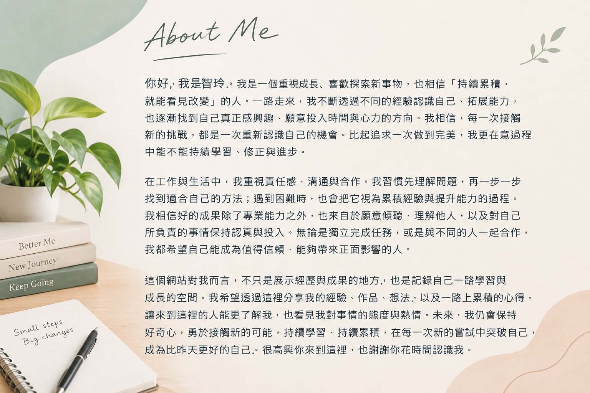

你好，我是智玲。我是一個重視成長、喜歡探索新事物，也相信「持續累積，就能看見改變」的人。一路走來，我不斷透過不同的經驗認識自己、拓展能力，也逐漸找到自己真正感興趣、願意投入時間與心力的方向。我相信，每一次接觸新的挑戰，都是一次重新認識自己的機會。比起追求一次做到完美，我更在意過程中能不能持續學習、修正與進步。
在工作與生活中，我重視責任感、溝通與合作。我習慣先理解問題，再一步一步找到適合自己的方法；遇到困難時，也會把它視為累積經驗與提升能力的過程。我相信好的成果除了專業能力之外，也來自於願意傾聽、理解他人，以及對自己所負責的事情保持認真與投入。無論是獨立完成任務，或是與不同的人一起合作，我都希望自己能成為值得信賴、能夠帶來正面影響的人。
這個網站對我而言，不只是展示經歷與成果的地方，也是記錄自己一路學習與成長的空間。我希望透過這裡分享我的經驗、作品、想法，以及一路上累積的心得，讓來到這裡的人能更了解我，也看見我對事情的態度與熱情。未來，我仍會保持好奇心，勇於接觸新的可能，持續學習、持續累積，在每一次新的嘗試中突破自己，成為比昨天更好的自己。很高興你來到這裡，也謝謝你花時間認識我。
